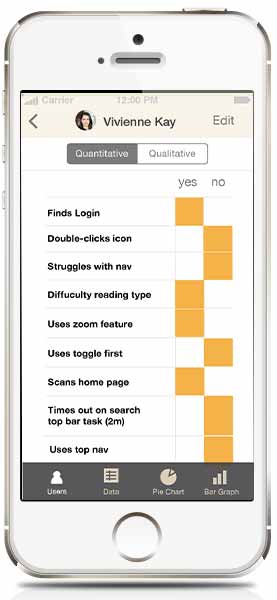

Pointer is a UX research tool that streamlines the process of using rainbow spreadsheets to collect and interpret user feedback.
With tools tailored to the task, UX researchers can focus on engaging with the user.
Collecting research takes just a few steps:
- Populating spreadsheet with questions and tasks
- Create and organize custom user profiles
- Use in-built features to gather qualitative and quantitative feedback
Results are shared with team-members instantly with an in-built auto-sync feature. Alternatively, with one click, data can be crunched into a pie-graph or bar-chart for speedy sharing and review.